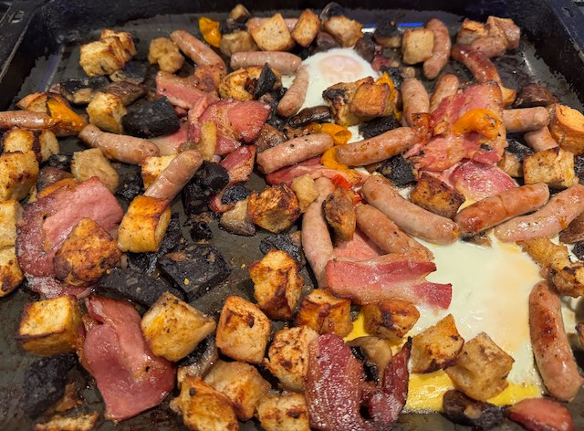

Full English Traybake

Serves: 4
Cook Time: 1 hour
From mobkitchen. Serve with beans.
Ingredients
- 300g pack bacon, halved
- 375g pack sausages
- handful parsley, finley chopped
- 3 garlic cloves, mashed
- 250g chestnut mushrooms, wiped, stalked and quartered
- olive oil
- salt
- ½ sourdough loaf, pulled into bits
- 250g cherry tomatoes, halved and lightly salted
- 230g black pudding, sliced and quartered
- 4 eggs
- salt
Method
Heat the oven to 180°C.
Bacon and Sausage. Put on a tray, and cook in oven for 15 min.
Mushrooms. Add parsley, garlic and oil to a bowl and mix. Add the mushrooms, salt and mix.
Bread. Cut or tear into pieces, put in a bowl and drizzle with olive oil, mix.
Add mushrooms, bread, tomatoes and black pudding to the tray, stir around, and cook for another 15 min.
Crack the eggs on top and bake for 6 mins just until the whites are set.
Serve, with beans and brown sauce.